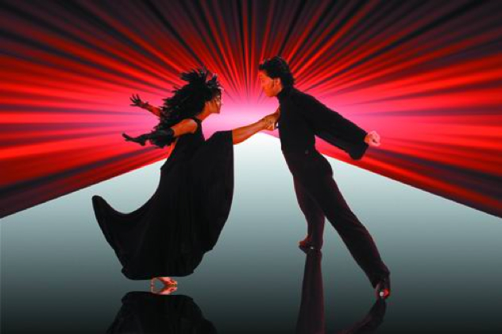
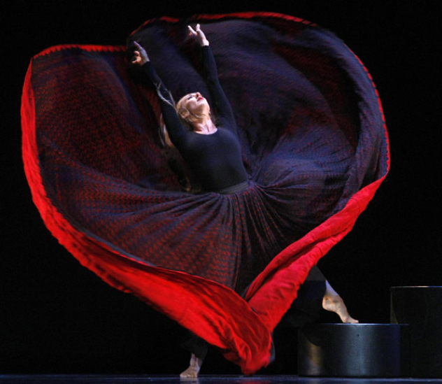
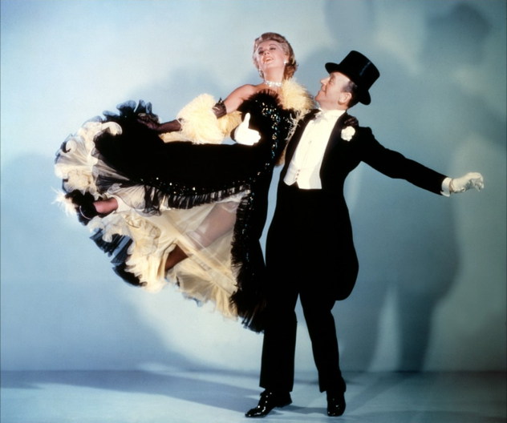
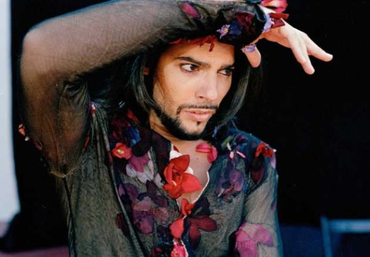
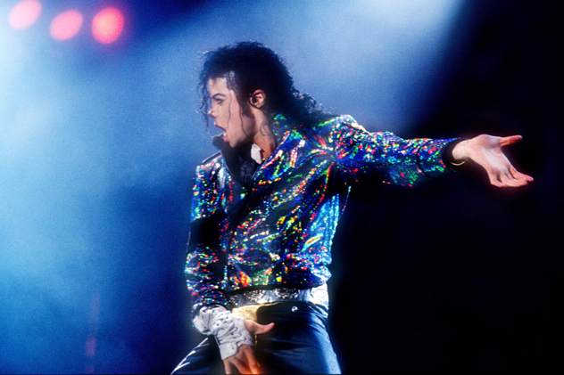

Dancers of the World
Being an ex-dancer myself too, I decided to write a little about the dancers that influenced me in the past. I did a bit of research, and it turns out that I'm not the only one who consider these next 5 dancers to be one of the best in the world. Even though it's not the same order of preference, I recommend you to follow this link here to read more about them, and others too.
So without any further ado let's start with my favorite , and number one on the list.
No.1 Donnie Burns
Donnie Burns is a professional ballroom dancer and he's my favourite of this list as I competed against him about 20 years ago. Back then he was already a multiple world champion in Latin dances. At that particular competition I managed a decent 16th place. It was the European Championship and a total of 3000 couples were competing in it, over different categories.
No.2 Martha Graham
Martha Graham was the first dancer that I learned about in school, that managed to combine ballet with a fluid move of the body, to modern style music. She was an influence to all of us and foremost thought us that dancing is a universal language, and it can bring dancers of all styles together.
No.3 Fred Astaire and Ginger Rogers
Fred Astaire and Ginger Rogers were an absolute brilliant dance couple and were my parent's favourite stars. My father was a ballet dancer and violin player, while my mother a floor gymnast. So they were both fascinated by music and dance, and when it came to Fred or Ginger, it was like a couple of demigods to my parents. My favourite movie with them is Swing Time, which I saw at least 20 times over years, and if you want any details about any of them, I'll put you in contact with my parents ;)
No.4 Joaquin Cortes
Joaquín Cortés, just like Martha Graham, was a huge topic back in my day as a dance student. He travelled the world and made Flamenco dancing famous. He inspired me with many of my Paso Doble choreographies. The same as Martha, he combined many of the cultural Spanish dances into a more universal Flamenco style dance.
No.5 Michael Jackson
Michael Jackson was the most important singer of my teens, as well as a great dancer. He invented a lot of dance moves himself and people wished to learn them. If we wanted to impress some girls at a party, we would definitely impersonate Michael Jackson’s dance moves. His style became to be known as "Jackson Style"